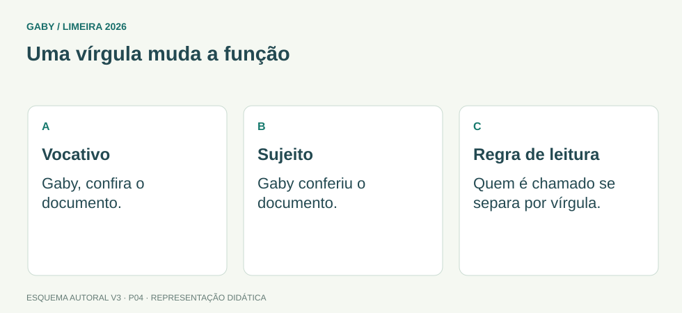

Objetivos do módulo
- Aplicar as regras fundamentais de vírgula.
- Evitar separar sujeito e verbo ou verbo e complemento.
- Usar pontuação para isolar termos deslocados, explicativos e enumerativos.
- Distinguir a vírgula proibida, a obrigatória e a facultativa (adjunto adverbial curto × longo, “e” com sujeitos diferentes).
- Reconhecer vocativo, aposto explicativo × especificativo, oração adjetiva explicativa × restritiva e a vírgula de elipse.
- Empregar ponto e vírgula, dois-pontos, travessão, parênteses, aspas, reticências e colchetes.
- Pontuar perguntas diretas e indiretas e transpor o discurso direto para o indireto.
Uma vírgula muda a função

Descrição em texto do esquema
- Vocativo: Gaby, confira o documento.
- Sujeito: Gaby conferiu o documento.
- Regra de leitura: Quem é chamado se separa por vírgula.
Oficina visual · aplique o esquema
Pontue “Senhores candidatos aguardem a chamada” e explique a alteração.
Atividade autoral complementar da V3. Registre sua resposta; a resolução está no arquivo de gabarito e revisão.
Mapa do conteúdo
1. A vírgula não marca “respiração”
A pontuação organiza a estrutura sintática e o sentido. Uma pausa da fala pode coincidir com vírgula, mas esse não é o critério gramatical. O primeiro cuidado é identificar sujeito, verbo e complementos.
Em ordem direta, não se separa por vírgula o sujeito do verbo nem o verbo de seu objeto/complemento.
Onde a vírgula é proibida
Regra geral: não se separam por vírgula termos que mantêm estreita ligação sintática. O Manual de Redação da Presidência da República (item 11.9.1) registra como erro a vírgula entre sujeito e verbo e entre verbos ou nomes e seus complementos. O tamanho do sujeito não muda a regra: por mais longo que seja, ele continua ligado ao verbo sem vírgula.
| Caso | Regra | Exemplo correto | Erro comum |
|---|---|---|---|
| Sujeito × verbo | Sem vírgula, mesmo com sujeito longo | Os candidatos aprovados na primeira etapa do processo seletivo farão a entrevista. | Os candidatos aprovados na primeira etapa do processo seletivo, farão a entrevista. |
| Verbo × objeto direto | Sem vírgula | A secretaria enviou o comunicado. | A secretaria enviou, o comunicado. |
| Verbo × objeto indireto | Sem vírgula, também antes da preposição | O diretor respondeu aos pais. | O diretor respondeu, aos pais. |
| Verbo de ligação × predicativo | Sem vírgula | A sala estava vazia. | A sala estava, vazia. |
| Locução verbal | O auxiliar e o verbo principal não se separam | O prazo será prorrogado. | O prazo será, prorrogado. |
| Dentro do grupo nominal | Artigo, preposição, substantivo e adjunto ficam juntos | A lista dos materiais da cantina chegou. | A lista dos, materiais da cantina chegou. |
| Nome × complemento nominal | Sem vírgula | Temos necessidade de novos armários. | Temos necessidade, de novos armários. |
A exceção aparente: o par de vírgulas
Entre sujeito e verbo pode aparecer um termo intercalado. Nesse caso, ele fica entre duas vírgulas, e o sujeito continua ligado ao verbo “por cima” da intercalação: “Os servidores, como se esperava, concluíram o relatório.” Retire o trecho entre as vírgulas e a frase continua perfeita. O erro é abrir a intercalação e não fechá-la: com uma vírgula só, sobra uma vírgula entre sujeito e verbo.
2. Casos frequentes de vírgula
- Isolar vocativo: “Senhores candidatos, leiam o aviso.”
- Isolar aposto explicativo: “Limeira, município paulista, realizará a prova.”
- Separar elementos de enumeração.
- Marcar adjunto adverbial deslocado, especialmente quando longo.
- Isolar expressões explicativas ou intercaladas: “isto é”, “por exemplo”, “portanto”, conforme a estrutura.
Vocativo
Vocativo é o termo que chama ou interpela a pessoa a quem se fala. Ele não faz parte da estrutura sujeito–verbo–complemento e por isso fica sempre isolado por vírgula, em qualquer posição: no início (“Professora, a turma chegou.”), no meio, entre duas vírgulas (“Agradeço, senhores pais, a presença de todos.”), e no fim (“A turma chegou, professora.”). Em pergunta, a vírgula vem antes do vocativo final, e o ponto de interrogação, depois dele: “A turma já chegou, professora?”
Não confunda vocativo com sujeito. Em “Carla, envie a planilha”, Carla é chamada: o verbo está no imperativo e o sujeito (você) está oculto. Em “Carla enviou a planilha”, Carla é o sujeito e não leva vírgula. Teste: se o termo é a pessoa que recebe a mensagem e caberia um “ó” antes dele, é vocativo.
Aposto explicativo × especificativo
Aposto é o termo que explica, identifica ou resume outro termo nominal.
- Explicativo: acrescenta informação sobre um ser já identificado e fica entre vírgulas (ou entre travessões, ou entre parênteses): “Carlos Drummond de Andrade, poeta mineiro, nasceu em Itabira.” Retirado o aposto, a frase continua completa e verdadeira.
- Especificativo: individualiza um substantivo genérico e se liga a ele sem pausa, por isso não leva vírgula: “o poeta Drummond”, “a cidade de Limeira”, “o rio Piracicaba”, “o mês de março”.
- Resumidor e enumerativo: o resumidor (tudo, nada, ninguém, todos) retoma uma enumeração; o enumerativo detalha um termo anterior. Os dois costumam vir depois de dois-pontos ou de travessão (seção 4); o resumidor também aparece depois de vírgula.
Enumeração
Na enumeração de termos coordenados sem conjunção (assindéticos), a vírgula separa os itens; o último costuma ser ligado por “e”, “ou” ou “nem”, sem vírgula antes: “Trouxe clipes, grampos, envelopes e etiquetas.” A mesma regra vale para orações justapostas: “Chegou, cumprimentou a equipe, abriu a sala.” A vírgula antes de “etc.” é facultativa; o Manual de Comunicação do Senado recomenda não usá-la. Cuidado: a lista continua sendo complemento do verbo, então não se põe vírgula entre o verbo e o primeiro item.
Adjunto adverbial: posição e tamanho
Adjunto adverbial indica uma circunstância (tempo, lugar, modo, causa, finalidade). Na ordem direta, no fim da oração, ele dispensa vírgula: “A reunião acontecerá no auditório na quinta-feira.” Deslocado para o início ou para o meio, a vírgula depende do tamanho:
- Longo (expressão de várias palavras): a vírgula é recomendada, e as bancas costumam considerá-la necessária. “Durante o período de rematrícula dos estudantes, a secretaria funcionará até as 19 horas.”
- Curto (um advérbio ou expressão breve): a vírgula é facultativa e serve para realçar a circunstância. “Amanhã a secretaria abrirá cedo.” e “Amanhã, a secretaria abrirá cedo.” estão corretas.
- Intercalado (entre sujeito e verbo, ou entre verbo e complemento): fica entre duas vírgulas, ou, se for curto, sem nenhuma; nunca com uma vírgula só. “O diretor, certamente, aprovará o projeto.” ou “O diretor certamente aprovará o projeto.”
O Manual de Comunicação do Senado resume a regra: isolam-se os adjuntos adverbiais deslocados e, em geral, longos; se o adjunto for curto, a vírgula é facultativa. Não existe um número exato de palavras que defina “longo”. Na prova, trate como facultativa a vírgula depois de um advérbio isolado (hoje, ontem, aqui, depois) e como esperada a vírgula depois de uma expressão extensa. A vírgula não aparece porque a palavra é advérbio: ela marca o deslocamento.
Expressões explicativas e conjunções intercaladas
Expressões explicativas ou retificativas, como isto é, ou seja, por exemplo, ou melhor, aliás e a saber, ficam entre vírgulas: “O prazo é improrrogável, ou seja, não haverá segunda chamada.”
Conjunções coordenativas deslocadas para o meio ou o fim da oração (porém, contudo, todavia, entretanto, no entanto, portanto, logo, pois) também ficam entre vírgulas (Manual de Redação, item 11.9.1, d): “A obra terminou no prazo; o orçamento, contudo, foi ultrapassado.” / “Os dados estão incompletos; vamos, portanto, refazer a contagem.” No início da oração, a conjunção vem logo depois da vírgula ou do ponto e vírgula que separa as orações: “A obra terminou no prazo, mas o orçamento foi ultrapassado.”
Atenção ao “pois”: deslocado para depois do verbo e entre vírgulas, ele é conclusivo e equivale a “portanto” (“O ônibus quebrou; a excursão foi, pois, cancelada.”); no início da oração, sem vírgulas em volta, é explicativo e equivale a “porque” (“Leve o guarda-chuva, pois vai chover.”).
Elipse do verbo
Elipse é a omissão de um termo que o leitor recupera pelo contexto. Quando o verbo já apareceu na oração anterior e fica subentendido na seguinte, a vírgula marca o lugar dele (Manual de Redação, item 11.9.1, f): “Marta cuida das matrículas; Pedro, das transferências.” A vírgula está no lugar de “cuida”. Em geral, as orações paralelas são separadas por ponto e vírgula, e a vírgula aparece no ponto da omissão. A omissão de um termo já expresso antes também é chamada de zeugma.
Teste prático: se, logo depois da vírgula, falta um verbo que você recupera da oração anterior (Pedro [cuida] das transferências), a vírgula é de elipse. Ela é correta, embora pareça separar o sujeito do complemento.
Quadro da vírgula: obrigatória, facultativa e proibida
| Caso | Regra | Exemplo correto | Erro comum |
|---|---|---|---|
| Vocativo | Sempre isolado, em qualquer posição | Agradeço, senhores pais, a presença de todos. | Agradeço senhores pais, a presença de todos. |
| Aposto explicativo | Entre duas vírgulas | Ouro Preto, antiga capital mineira, recebe muitos turistas. | Ouro Preto, antiga capital mineira recebe muitos turistas. |
| Aposto especificativo | Sem vírgula | A cidade de Ouro Preto recebe muitos turistas. | A cidade, de Ouro Preto, recebe muitos turistas. |
| Enumeração | Vírgula entre os itens; sem vírgula antes do “e” final | Comprei pincéis, tintas e papel. | Comprei, pincéis, tintas, e papel. |
| Adjunto adverbial longo deslocado | Vírgula recomendada depois do bloco inteiro | No fim de cada bimestre letivo, o conselho se reúne. | No fim de cada bimestre, letivo o conselho se reúne. |
| Adjunto adverbial curto deslocado | Vírgula facultativa | Ontem o conselho se reuniu. / Ontem, o conselho se reuniu. | Tratar essa vírgula como obrigatória ou como proibida. |
| Expressão explicativa | Entre duas vírgulas | É vedado, por exemplo, fumar no pátio. | É vedado por exemplo, fumar no pátio. |
| Conjunção intercalada | Entre duas vírgulas | A proposta, no entanto, foi rejeitada. | A proposta no entanto, foi rejeitada. |
| Elipse do verbo | Vírgula no lugar do verbo omitido | Eu levo os pratos; você, os copos. | Eu levo os pratos; você os copos. |
3. Orações e conectivos
Orações coordenadas adversativas introduzidas por “mas”, “porém”, “contudo” costumam ser separadas por vírgula. Orações adverbiais deslocadas para o início também são normalmente seguidas de vírgula.
Orações adjetivas explicativas ficam entre vírgulas; restritivas, não. A pontuação muda o alcance da informação.
| Frase | Efeito |
|---|---|
| Os alunos que estudaram passaram. | Restringe: apenas os que estudaram. |
| Os alunos, que estudaram, passaram. | Apresenta “que estudaram” como explicação sobre o grupo mencionado. |
Coordenadas adversativas: a vírgula vem antes do “mas”
Antes da conjunção adversativa que inicia oração (mas, porém, contudo, todavia, entretanto, no entanto) usa-se vírgula: “O ônibus atrasou, mas todos chegaram a tempo.” A vírgula fica antes da conjunção, nunca logo depois dela. Com orações longas, pode-se usar ponto e vírgula antes de porém, contudo e todavia. O “mas” sempre abre a sua oração; as demais adversativas podem ser deslocadas para o meio dela e, então, ficam entre vírgulas.
Orações ligadas por “e”
Quando o “e” liga orações com o mesmo sujeito, não se usa vírgula: “A diretora leu o ofício e respondeu no mesmo dia.” Quando as orações têm sujeitos diferentes, a gramática tradicional admite a vírgula antes do “e”, e ela se torna necessária quando evita uma leitura errada. O Manual de Comunicação do Senado orienta usá-la quando os dois requisitos estão presentes: sujeitos diferentes e risco de ambiguidade. Compare:
- “A diretora convidou os professores e os alunos organizaram a festa.” Numa leitura rápida, parece que a diretora convidou os professores e os alunos.
- “A diretora convidou os professores, e os alunos organizaram a festa.” A vírgula mostra que “os alunos” é o sujeito de uma nova oração.
Há divergência entre os manuais sobre o caso em que não há ambiguidade. Na prova, a vírgula antes de “e” que liga orações de sujeitos diferentes é aceita como correta; já a vírgula antes do “e” final de uma enumeração simples é tratada como erro.
Oração adverbial anteposta, intercalada ou posposta
Oração subordinada adverbial expressa uma circunstância: causa, condição, concessão, tempo, finalidade, entre outras. Antes da principal (anteposta), ela é separada por vírgula; no meio da principal, fica entre vírgulas: “Quando o sinal tocar, os alunos sairão.” / “Os alunos, quando o sinal tocar, sairão.” Depois da principal (posposta), a vírgula é em geral facultativa: “Os alunos sairão quando o sinal tocar.”
A regra vale também para as orações reduzidas, que não têm conjunção e trazem o verbo no infinitivo, no gerúndio ou no particípio: “Ao receber o diploma, a aluna agradeceu aos pais.” / “Concluída a vistoria, o prédio foi liberado.” / “Revisando as notas, o professor encontrou um erro.”
Cuidado com a fronteira: a vírgula fica no fim da oração adverbial inteira, e não dentro dela. Em “Caso o documento chegue hoje, o processo será analisado”, a vírgula vem depois de “hoje”. Pô-la depois de “documento” separaria o sujeito do verbo dentro da própria oração condicional; pô-la depois de “processo” separaria o sujeito da principal do seu verbo.
Oração adjetiva explicativa × restritiva
Oração adjetiva começa por pronome relativo (que, o qual, quem, onde, cujo) e se refere a um substantivo anterior.
- Restritiva (sem vírgulas): delimita, dentro de um grupo, apenas uma parte. “Os candidatos que faltaram à prova foram eliminados.” Só os faltosos foram eliminados; os demais continuam no concurso.
- Explicativa (entre vírgulas): acrescenta uma informação que vale para todo o grupo já identificado. “Os candidatos, que faltaram à prova, foram eliminados.” Todos os candidatos de que se fala faltaram, e todos foram eliminados.
Por isso a vírgula muda o sentido: com ela, a informação vale para todos; sem ela, seleciona alguns. Nome próprio e ser único costumam vir com oração explicativa: “O Sol, que é uma estrela, ilumina a Terra.”
A vírgula que muda o sentido
Como a pontuação mostra a função de cada termo, pôr, tirar ou mover uma vírgula pode mudar o que a frase afirma:
| Frase | Sentido |
|---|---|
| Não, saia pela porta lateral. | “Não” responde a algo dito antes; a orientação é sair pela porta lateral. |
| Não saia pela porta lateral. | A orientação é o contrário: está proibido sair por ali. |
| Ana, a coordenadora chegou. | Ana é vocativo: alguém avisa Ana de que a coordenadora chegou. |
| Ana, a coordenadora, chegou. | “a coordenadora” é aposto: Ana é a coordenadora, e foi ela quem chegou. |
| Os ônibus que estavam lotados atrasaram. | Restritiva: só os ônibus lotados atrasaram. |
| Os ônibus, que estavam lotados, atrasaram. | Explicativa: todos estavam lotados, e todos atrasaram. |
4. Dois-pontos, ponto e vírgula, travessão e parênteses
Dois-pontos introduzem explicação, enumeração, citação ou consequência anunciada. Ponto e vírgula separa partes mais extensas ou itens já internamente pontuados. Travessões podem marcar fala, destaque ou intercalação. Parênteses isolam informação acessória.
Dois-pontos
Os dois-pontos anunciam o que vem a seguir. O Manual de Redação (item 11.9.3) registra seu uso para introduzir citações, marcar enunciados de diálogo e indicar um esclarecimento, um resumo ou uma consequência do que se afirmou.
| Caso | Regra | Exemplo correto | Erro comum |
|---|---|---|---|
| Enumeração anunciada | Um termo anuncia a lista (os seguintes, dois materiais, estes itens); os dois-pontos vêm depois dele | Precisamos de dois materiais: cola e tesoura. | Precisamos de dois: materiais cola e tesoura. |
| Esclarecimento ou explicação | O que vem depois especifica ou explica o termo anterior | O motivo do atraso era simples: faltou energia. | O motivo do atraso era: simples faltou energia. |
| Termo resumidor | Depois de uma enumeração, introduz a palavra que a resume (tudo, nada, ninguém) | Mesas, cadeiras, quadros: nada ficou fora do lugar. | Mesas cadeiras quadros nada: ficou fora do lugar. |
| Citação ou fala | Depois do verbo de elocução (disse, perguntou, avisou), introduz a fala reproduzida | O porteiro avisou: “O portão fecha às 18 horas.” | O porteiro avisou “o portão fecha às 18 horas.” |
| Consequência ou conclusão | Introduz o resultado ou o resumo do que foi dito | Estudou todos os dias: foi aprovado. | Estudou todos os dias foi aprovado. |
Cuidados que a prova cobra:
- A norma-padrão evita os dois-pontos entre o verbo e o seu complemento quando nada anuncia a lista. Em vez de “Convidamos: os pais e os avós”, escreva “Convidamos os pais e os avós” ou “Convidamos dois grupos: os pais e os avós”.
- Os dois-pontos não ficam no meio da lista nem separam um substantivo do adjetivo ou do complemento que o acompanha.
- Depois dos dois-pontos, a fala ou a citação começa com letra maiúscula; uma explicação ou enumeração comum em geral continua com minúscula.
Ponto e vírgula
O ponto e vírgula marca uma pausa maior que a da vírgula e menor que a do ponto. Ele não encerra o período: a palavra seguinte continua com letra minúscula e não é preciso abrir parágrafo. Usos (Manual de Redação, item 11.9.2):
- separar itens ou orações coordenadas que já têm vírgulas internas: “Participaram a turma A, do período da manhã; a turma B, do período da tarde; a turma C, do período noturno.”
- separar orações coordenadas extensas ou paralelas, sobretudo as que comparam ou contrapõem ideias: “A manhã será dedicada às matrículas; a tarde, ao atendimento dos pais.” Repare que a vírgula depois de “a tarde” marca a elipse de “será dedicada”.
- separar orações quando a segunda traz conjunção deslocada: “O prazo terminou ontem; os pedidos atrasados, portanto, não serão aceitos.”
- separar os itens de uma lista em tópicos, como os incisos de uma lei: cada item termina em ponto e vírgula, e o último, em ponto final.
Travessão
O travessão (—) é um traço mais longo que o hífen (-) e não deve ser trocado por ele. Usos:
- Diálogo: no discurso direto, introduz a fala de cada personagem e marca a mudança de interlocutor; cada fala abre um parágrafo. Também separa a fala do comentário do narrador: “— Terminei o relatório — disse a estagiária.”
- Intercalação: dois travessões isolam uma explicação ou um comentário, como fariam as vírgulas ou os parênteses, mas com mais destaque: “O novo laboratório — o maior da rede — será inaugurado em março.” O Manual de Redação (item 10.5) registra que o travessão substitui parênteses, vírgulas e dois-pontos.
- Destaque final: um travessão simples pode realçar o fim do enunciado ou introduzir uma explicação, no lugar dos dois-pontos: “Só faltava uma coisa — a assinatura do diretor.”
Parênteses
Os parênteses intercalam informação acessória: explicação, comentário, data, sigla ou referência (Manual de Redação, item 10.4). Retirado o trecho entre parênteses, a frase continua completa e com o mesmo sentido principal: “A matrícula (feita só pela internet) vai até sexta-feira.” / “O Conselho Escolar (CE) aprovou o calendário.”
Se a frase continua depois dos parênteses, a vírgula ou o ponto que a estrutura exige vem depois do parêntese que fecha: “Na reunião de terça-feira (dia 12), decidiu-se o calendário.” Vírgulas, travessões e parênteses podem isolar o mesmo trecho; muda o grau de destaque: os parênteses atenuam, os travessões realçam.
| Caso | Regra | Exemplo correto | Erro comum |
|---|---|---|---|
| Itens com vírgulas internas | Ponto e vírgula entre os itens | Visitamos Campinas, em São Paulo; Londrina, no Paraná; Joinville, em Santa Catarina. | Visitamos Campinas, em São Paulo, Londrina, no Paraná, Joinville, em Santa Catarina. |
| Fala em diálogo | Travessão abre a fala; outro separa o comentário do narrador | — Posso entrar? — perguntou o aluno. | Usar hífen no lugar do travessão: - Posso entrar? |
| Intercalação com travessões | Abre e fecha com travessão quando a frase continua | A biblioteca — reformada no ano passado — reabriu ontem. | A biblioteca — reformada no ano passado, reabriu ontem. |
| Informação acessória | Entre parênteses; a pontuação da frase vem depois do parêntese que fecha | No encontro de pais (dia 5), haverá sorteio. | No encontro de pais (dia 5,) haverá sorteio. |
5. Aspas, reticências e colchetes
Aspas
Usos principais, segundo o Manual de Redação (item 10.1) e o Manual de Comunicação do Senado:
- Citação literal: delimitam palavras reproduzidas exatamente como alguém as disse ou escreveu. No Manual de Redação, a citação direta de até três linhas vai entre aspas; a de quatro linhas ou mais vai em parágrafo recuado, sem aspas.
- Destaque de termo: títulos de textos e palestras, termos técnicos, definições e palavras citadas como palavras.
- Sentido especial, ironia ou distanciamento: palavra usada em sentido diferente do habitual, gíria, regionalismo ou termo do qual o autor se distancia. Em “A ‘rápida’ reforma durou dois anos”, as aspas sugerem o contrário do que a palavra diz.
- Aspas dentro de aspas: se o trecho citado já contém aspas, elas passam a simples (‘ ’), como no exemplo anterior.
As aspas sozinhas não revelam a intenção: só o contexto mostra se elas citam, destacam ou ironizam. Desconfie de alternativas que afirmam que as aspas indicam “sempre” ironia ou “necessariamente” erro.
Posição da pontuação (Manual de Redação, item 10.1.1): se a citação termina junto com a frase e tem ponto final, interrogação ou exclamação próprios, as aspas vêm depois desses sinais, e não se acrescenta outro ponto: O fiscal perguntou: “Onde está o alvará?” Se a interrogação ou a exclamação não pertence à citação, vem depois das aspas: Quem disse “A pressa é inimiga da perfeição”?
Reticências
As reticências (...) mostram que o enunciado ficou suspenso ou interrompido. Pela regra tradicional da gramática normativa, elas indicam:
- hesitação ou dúvida de quem fala: “Bom... não sei se consigo terminar hoje.”
- interrupção da fala ou do pensamento: “Eu ia explicar o problema, mas...”
- suspensão para criar expectativa, ironia ou insinuação, deixando a conclusão ao leitor: “Ele prometeu chegar cedo... como sempre.”
- continuação de uma enumeração que o leitor pode completar: “Na caixa havia lápis, borrachas, réguas...”
Quando encerram a frase, as reticências dispensam outro ponto final.
Colchetes e a supressão de trecho
Em citações, a omissão de uma parte do texto original é indicada por reticências entre colchetes: [...]. Os colchetes sozinhos marcam acréscimo ou comentário de quem cita (interpolação). É o que orientam os manuais de normalização de citações, como o do Sistema de Bibliotecas da Universidade Federal do Pampa, elaborado com base na norma ABNT NBR 10520. Exemplo: o original “A biblioteca, que fica no segundo andar, abre às oito horas” pode ser citado como “A biblioteca [...] abre às oito horas”. O sinal avisa que algo foi cortado; não significa reprodução integral nem mudança de autor.
| Caso | Regra | Exemplo correto | Erro comum |
|---|---|---|---|
| Citação literal | Entre aspas; a pontuação que pertence à citação fica dentro delas | O fiscal perguntou: “Onde está o alvará?” | O fiscal perguntou: “Onde está o alvará”? |
| Aspas de destaque ou ironia | O valor depende do contexto | A “rápida” reforma durou dois anos. | Afirmar que as aspas indicam sempre ironia. |
| Reticências de hesitação | Marcam suspensão; no fim da frase, dispensam outro ponto | Bom... não sei se consigo. | Bom... não sei se consigo.... |
| Supressão em citação | Reticências entre colchetes no lugar do trecho omitido | “A biblioteca [...] abre às oito horas.” | Usar [...] para indicar que o texto foi copiado inteiro. |
6. Ponto final, interrogação e exclamação
Ponto final
O ponto final encerra o período declarativo, afirmativo ou negativo, e o pedido sem ênfase: “A reunião foi adiada.” / “Feche a porta, por favor.” Ele separa afirmações autônomas, cada uma com sua estrutura completa. O ponto nunca deve cortar uma oração ao meio, separando sujeito e verbo ou verbo e complemento, nem isolar como frase uma oração que depende da anterior. Este último erro é o que o Manual de Redação (item 11.3) chama de fragmentação de frases.
Ponto de interrogação: pergunta direta × indireta
A interrogação direta é a pergunta feita ao interlocutor tal como se fala, e termina com ponto de interrogação: “A biblioteca abre no sábado?” / “Quem assinou o livro de ponto?” Se houver vocativo, ele continua isolado por vírgula: “Já almoçou, Bruno?”
A interrogação indireta é a pergunta encaixada como complemento de um verbo como saber, perguntar, indagar, querer saber ou ignorar. Ela vem introduzida por “se” ou por uma palavra interrogativa (quem, qual, quando, onde, como, por que, quanto), e o período termina com ponto final, porque é declarativo: “Gostaria de saber se a biblioteca abre no sábado.” / “Ninguém sabe quem assinou o livro de ponto.” O Manual de Redação (item 11.9.4) registra que não cabe ponto de interrogação nas estruturas interrogativas indiretas.
Ponto de exclamação
O ponto de exclamação marca entonação expressiva: surpresa, espanto, admiração, entusiasmo, súplica ou ordem enfática. Aparece depois de interjeições e de frases exclamativas: “Como a escola ficou bonita!” / “Socorro!” / “Parabéns pela aprovação!” Segundo o Manual de Redação (item 11.9.5), na redação oficial seu uso fica geralmente restrito a discursos e peças de retórica.
O sinal final pode mudar o valor da mesma frase: “Você terminou.” é uma constatação; “Você terminou?”, uma pergunta; “Você terminou!”, surpresa ou alegria.
| Caso | Regra | Exemplo correto | Erro comum |
|---|---|---|---|
| Período declarativo | Ponto final no fim da estrutura completa | A biblioteca fecha às 17 horas. | A biblioteca fecha. Às 17 horas. |
| Interrogação direta | Ponto de interrogação | Onde fica a sala de leitura? | Onde fica a sala de leitura. |
| Interrogação indireta | Ponto final | Perguntei onde fica a sala de leitura. | Perguntei onde fica a sala de leitura? |
| Exclamação | Ponto de exclamação para emoção ou ênfase | Que susto você me deu! | Usar exclamação em ofício ou requerimento. |
7. Discurso direto, discurso indireto e pontuação
No discurso direto, o narrador reproduz a fala exatamente como foi dita. Marcas: verbo de elocução (dizer, perguntar, responder, avisar, explicar, exclamar), dois-pontos e a fala com travessão (em novo parágrafo) ou entre aspas, começando com maiúscula e com a pontuação própria (interrogação, exclamação, ponto). Exemplo: A professora perguntou à turma: — Quem terminou a atividade? O verbo de elocução também pode vir depois da fala, separado por travessão: — Quem terminou a atividade? — perguntou a professora.
No discurso indireto, o narrador conta com as próprias palavras o que foi dito. A fala vira oração subordinada, complemento do verbo de elocução, introduzida por “que” (afirmação ou pedido), por “se” (pergunta de sim ou não) ou pela própria palavra interrogativa (quem, qual, quando, onde, como, por que). Desaparecem os dois-pontos, o travessão, as aspas e o ponto de interrogação da fala; o período termina com ponto final. Também não se põe vírgula entre o verbo de elocução e a oração que é seu complemento, a não ser para isolar uma intercalação com duas vírgulas. Exemplo: A professora perguntou à turma quem tinha terminado a atividade.
O que muda na transposição
Quando o verbo de elocução está no passado (disse, perguntou, avisou), a fala passa para o tempo e para o ponto de vista do narrador. Os dêiticos, palavras que só se entendem a partir de quem fala, onde e quando (eu, você, aqui, hoje, este), são ajustados. Regra tradicional da gramática normativa:
| Elemento | Discurso direto | Discurso indireto |
|---|---|---|
| Pessoa | eu, nós, você, meu (de quem fala) | ele, ela, eles, seu, dele |
| Presente do indicativo | “Estou cansado.” | disse que estava cansado (pretérito imperfeito) |
| Pretérito perfeito | “Terminei.” | disse que tinha terminado ou que terminara (mais-que-perfeito) |
| Futuro do presente | “Voltarei.” | disse que voltaria (futuro do pretérito) |
| Imperativo | “Sente-se.” | pediu que se sentasse (pretérito imperfeito do subjuntivo) |
| Presente do subjuntivo | “Espero que dê certo.” | disse que esperava que desse certo |
| Tempo | hoje, ontem, amanhã, agora | naquele dia, no dia anterior (na véspera), no dia seguinte, naquele momento |
| Lugar | aqui, aí, cá | ali, lá |
| Demonstrativos | este, esse, isto, isso | aquele, aquilo |
| Vocativo | “Joana, venha cá.” | pediu a Joana que fosse até lá (o vocativo vira complemento) |
Se o verbo de elocução estiver no presente, os tempos da fala se mantêm: “Estou cansado.” → Ele diz que está cansado. A transposição muda só a forma, não o conteúdo: o que foi dito, por quem e a quem continua igual.
Exemplos resolvidos passo a passo
Exemplo 1
Situação: Pontue: “Na próxima segunda feira se não houver alteração o atendimento começará às oito horas.”
Exemplo 2
Situação: Compare: “Os servidores que participaram foram certificados” e “Os servidores, que participaram, foram certificados”.
Exemplo 3
Situação: Passe para o discurso indireto: O síndico perguntou aos moradores: — Vocês aprovam a pintura da fachada este mês?
Exemplo 4
Situação: Pontue: “Na secretaria a manhã é reservada aos alunos a tarde aos pais a noite aos professores.”
Exemplo 5
Situação: Explique a pontuação de: “O relatório chamou o atraso de ‘pequeno’: foram seis meses.” (as aspas simples aparecem porque a frase já está entre aspas).
Exemplo 6
Situação: Corrija a pontuação: “Os pais dos alunos do 9º ano, receberam o convite, e a direção pede, que confirmem presença até sexta-feira.”
Pegadinhas e erros frequentes
- Colocar vírgula entre sujeito e verbo.
- Separar verbo de objeto direto.
- Pontuar apenas “pelo ouvido”.
- Ignorar que vírgulas podem alterar o sentido de oração adjetiva.
- Achar que sujeito longo “pede” vírgula antes do verbo.
- Isolar termo intercalado com uma vírgula só, deixando a intercalação aberta.
- Tratar como obrigatória a vírgula depois de adjunto adverbial curto anteposto: ela é facultativa.
- Pôr vírgula antes do “e” final de enumeração simples ou, ao contrário, achar que a vírgula antes de “e” é sempre proibida.
- Pôr a vírgula depois do “mas” em vez de antes dele.
- Confundir vocativo com sujeito ou com aposto.
- Usar dois-pontos entre o verbo e o complemento sem termo que anuncie a lista.
- Manter o ponto de interrogação em pergunta indireta ou no discurso indireto.
- Esquecer de ajustar tempos verbais e dêiticos (hoje → naquele dia) na transposição para o discurso indireto.
- Achar que aspas indicam sempre ironia ou que [...] garante citação integral.
Resumo de prova
- Não separe sujeito do verbo.
- Não separe verbo de complemento por vírgula sem motivo estrutural.
- Vocativo e aposto explicativo ficam isolados.
- Adverbiais deslocadas costumam receber vírgula.
- Explicativa tem vírgulas; restritiva não.
- Vocativo: sempre entre vírgulas, no início, no meio ou no fim.
- Aposto especificativo (a cidade de Limeira) não leva vírgula.
- Adjunto adverbial deslocado: longo, vírgula recomendada; curto, facultativa; intercalado, duas vírgulas ou nenhuma.
- Conjunção ou expressão explicativa intercalada: entre duas vírgulas.
- Vírgula antes de “mas”; antes de “e” só com sujeitos diferentes ou para evitar ambiguidade.
- Vírgula marca a elipse do verbo já expresso.
- Ponto e vírgula: itens com vírgulas internas e orações paralelas.
- Dois-pontos: enumeração anunciada, esclarecimento, termo resumidor, fala.
- Travessão: fala e intercalação; parênteses: informação acessória.
- Aspas: citação, destaque ou ironia, conforme o contexto; [...] indica supressão.
- Reticências: hesitação, interrupção, suspensão.
- Pergunta direta: “?”; indireta: ponto final.
- Discurso indireto: que/se + tempos recuados + dêiticos ajustados + ponto final.
Exercícios do módulo
Resolva sem consultar o arquivo de gabarito. As questões são autorais e construídas para treinar os conceitos do edital.
- Os servidores do setor, concluíram o relatório.
- Os servidores do setor concluíram o relatório.
- Os servidores, do setor concluíram o relatório.
- Os servidores do setor concluíram, o relatório.
- vocativo
- objeto
- sujeito
- aposto
- Limeira município, paulista realizará a prova.
- Limeira, município paulista realizará a prova.
- Limeira município paulista realizará a prova.
- Limeira, município paulista, realizará a prova.
- parêntese
- dois-pontos
- vírgula
- nenhum sinal sempre
- encerrar período
- introduzir enumeração
- marcar vocativo
- separar sujeito
- Senhores, aguardem.
- A equipe, finalizou o serviço.
- O diretor, responsável pela unidade, assinou.
- Hoje, haverá atendimento.
- objeto do verbo
- aposto
- oração adverbial condicional deslocada
- sujeito do verbo
- formar plural
- substituir qualquer vírgula
- separar partes extensas ou itens complexos
- marcar acento tônico
- crase
- vírgulas
- hífen
- acento agudo
- analisar a estrutura sintática e o sentido
- usar vírgula a cada três palavras
- copiar o ritmo da fala
- seguir apenas a respiração
Quando terminar, abra Português 04 - Pontuação - Gabarito e Revisão.
Checklist de domínio
- ☐ Aplicar as regras fundamentais de vírgula.
- ☐ Evitar separar sujeito e verbo ou verbo e complemento.
- ☐ Usar pontuação para isolar termos deslocados, explicativos e enumerativos.
- ☐ Distinguir a vírgula proibida, a obrigatória e a facultativa (adjunto adverbial curto × longo, “e” com sujeitos diferentes).
- ☐ Reconhecer vocativo, aposto explicativo × especificativo, oração adjetiva explicativa × restritiva e a vírgula de elipse.
- ☐ Empregar ponto e vírgula, dois-pontos, travessão, parênteses, aspas, reticências e colchetes.
- ☐ Pontuar perguntas diretas e indiretas e transpor o discurso direto para o indireto.
Meta do módulo: 80% ou mais nas questões, sem depender de consulta.
Referências e conteúdos auxiliares
- Presidência da República — Manual de Redação, 3ª ediçãoClareza, redação oficial, concordância, regência e pontuação. Referência de apoio; modelos locais podem ter regras próprias.
- Academia Brasileira de Letras — VOLPConsulta de grafia e classe gramatical. O vocabulário não é um dicionário de significados.
- Presidência da República — Manual de Redação, 3ª edição: formatação e pontuaçãoConferidos os itens 10.1 e 10.1.1 (aspas e posição da pontuação na citação), 10.4 (parênteses), 10.5 (travessão), 11.3 (frases fragmentadas) e 11.9.1 a 11.9.5 (vírgula, inclusive elipse e erro entre sujeito e verbo ou verbo e complemento; ponto e vírgula; dois-pontos; ponto de interrogação, com a interrogativa indireta; ponto de exclamação). Conferido em 18/11/2026.
- Senado Federal — Manual de Comunicação da Secom: vírgulaConferidos: não separar sujeito e verbo nem verbo e objetos; isolar adjuntos adverbiais deslocados e longos, com vírgula facultativa se curtos; vírgula antes de adversativas; vírgula de elipse do verbo; vírgula antes de etc. facultativa e não recomendada. Conferido em 18/11/2026.
- Senado Federal — Manual de Comunicação da Secom: vírgula antes da conjunção eConferidos os dois requisitos para a vírgula antes de “e”: orações com sujeitos diferentes e risco de ambiguidade. Conferido em 18/11/2026.
- Senado Federal — Manual de Comunicação da Secom: aspasConferidos os usos (reprodução literal, sentido especial, títulos), aspas simples dentro de aspas, posição do ponto e o efeito irônico de aspas em palavra isolada. Conferido em 18/11/2026.
- Senado Federal — Manual de Comunicação da Secom: travessãoConferidos os usos em diálogo, intercalação, destaque e no lugar dos dois-pontos, e a distinção em relação ao hífen. Conferido em 18/11/2026.
- Universidade Federal do Pampa — Manual de normalização de citação, sistema de chamada e notas, 3ª ed. (2025)Conferidas a indicação de supressão em citação por reticências entre colchetes e a de interpolação por colchetes, com base na ABNT NBR 10520. Conferido em 18/11/2026.
Referências externas de apoio consultadas para a V3 em 27/09/2026. A origem das questões é o material autoral do projeto; estes links não indicam que uma instituição publicou ou validou os exercícios. As páginas externas precisam de internet. Em informática, confira a versão do programa; em legislação, observe o recorte e as regras de atualização do edital.